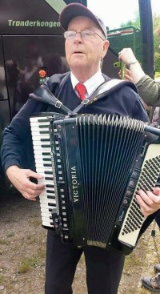

Josef Maksimiliam With
M, #67659, f. 1868
Biografi
Josef Maksimiliam With ble født i 1868 på/i Øksnes, Nordland. Han giftet seg med
Jenny Therese.
Josef Maksimiliam With bodde i 1900 på/i Sandfjord, Båtsfjord, Finnmark.
| Sist redigert |
28 juni 2012 00:00:00 |
Jenny Therese
K, #67660, f. 1869
Biografi
Jenny Therese was also known as Jenny Therese With.
| Sist redigert |
28 juni 2012 00:00:00 |
Torleif Magne Lilledal
M, #67668, f. 30 mars 1947, d. 12 januar 2016

Thorleif Lilledal
Biografi
Torleif Magne Lilledal ble født den 30 mars 1947. Han giftet seg med Grethe Marit Laugen. Han døde den 12 januar 2016. Han ble gravlagt den 20 januar 2016 på/i Steine kirkegård, Nærøy, Nord-Trøndelag.
| Sist redigert |
16 januar 2016 00:00:00 |
Egelund Gåsvær
M, #67669, f. 10 oktober 1901, d. 30 november 1983
Foreldre
Biografi
Egelund Gåsvær ble født den 10 oktober 1901 på/i Gåsvær, Vikna, Nord-Trøndelag. Han giftet seg med
Ingeborg Mikalsdatter Botnet i 1925. Han døde den 30 november 1983. Han ble gravlagt den 8 desember 1983 på/i Dun kirkegård, Jøa, Fosnes, Nord-Trøndelag.
Egelund Gåsvær ble døpt den 13 april 1902 på/i Vikna, Nord-Trøndelag. Han kjøpte i 1939 Botnet 48/5, Jøa, Fosnes, Nord-Trøndelag.
| Sist redigert |
1 august 2015 00:00:00 |
Ingeborg Mikalsdatter Botnet
K, #67670, f. 19 april 1899, d. 29 oktober 1986
Foreldre
Biografi
Ingeborg Mikalsdatter Botnet ble født den 19 april 1899 på/i Faksdal; Jøa, Fosnes, Nord-Trøndelag. Hun giftet seg med
Egelund Gåsvær i 1925. Hun døde den 29 oktober 1986. Hun ble gravlagt den 6 november 1986 på/i Dun kirkegård, Jøa, Fosnes, Nord-Trøndelag.
Ingeborg Mikalsdatter Botnet was also known as Ingeborg Gåsvær.
| Sist redigert |
1 august 2015 00:00:00 |
Mikal Mikalsen Botnet
M, #67671, f. 14 februar 1873
Biografi
Mikal Mikalsen Botnet ble født den 14 februar 1873 på/i Fosnes, Nord-Trøndelag. Han giftet seg med
Anna Petrusdatter.
| Sist redigert |
1 august 2015 00:00:00 |
Anna Petrusdatter
K, #67672, f. 17 november 1875
Biografi
Anna Petrusdatter was also known as Anna Botnet.
| Sist redigert |
1 august 2015 00:00:00 |
Kirsti Vesterhus
K, #67673, f. 15 juli 1945, d. 3 juli 2012
Foreldre
Biografi
Kirsti Vesterhus ble født den 15 juli 1945 på/i Steinkjer, Nord-Trøndelag. Hun giftet seg med Nils Kjøglum. Hun døde den 3 juli 2012.
Kirsti Vesterhus was also known as Kirsti Kjøglum.
| Sist redigert |
24 april 2013 00:00:00 |
| Slektskap | 8-menning 1 gang forskjøvet til Håkon Wahl |
Ruth Holthe
K, #67674, f. 31 desember 1951, d. 6 juli 2012
Biografi
Ruth Holthe ble født den 31 desember 1951. Hun giftet seg med Kjell Kjølstad. Hun døde den 6 juli 2012. Hun ble gravlagt den 18 juli 2012 på/i Namsos kirkegård, Namsos, Nord-Trøndelag.
Ruth Holthe was also known as Ruth Kjølstad.
| Sist redigert |
10 juli 2012 00:00:00 |
Gudrun Gulleson
K, #67675, f. 28 april 1891, d. 1 juni 1981
Foreldre
Familie: John Lien (f. 16 desember 1888, d. 25 august 1966)
Biografi
Gudrun Gulleson ble født den 28 april 1891 på/i Henning, Otter Tail County, Minnesota, USA. Hun giftet seg med
John Lien den 17 juni 1922 på/i Washington, USA. Hun døde den 1 juni 1981 på/i Tacoma, Pierce County, Washington, USA. Hun ble gravlagt på/i New Tacoma Cemetery, University Place, Pierce, Washington.
Gudrun Gulleson was also known as Gudrun Lien.
| Sist redigert |
5 april 2025 13:02:29 |
| Slektskap | 4-menning 2 ganger forskjøvet til Håkon Wahl |
{kind=link}